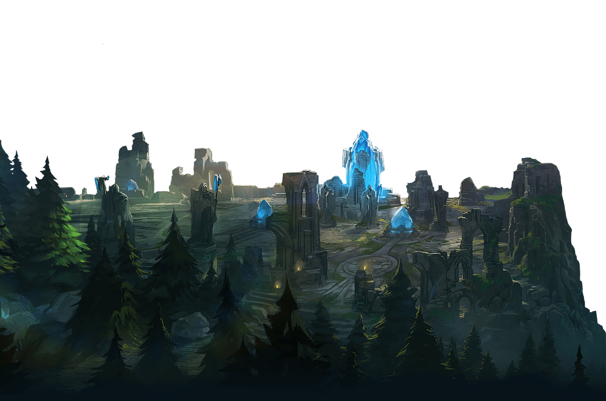
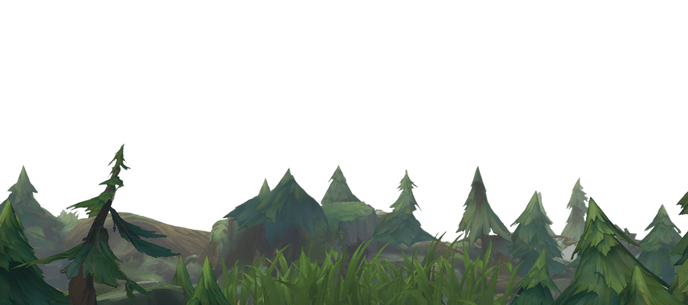
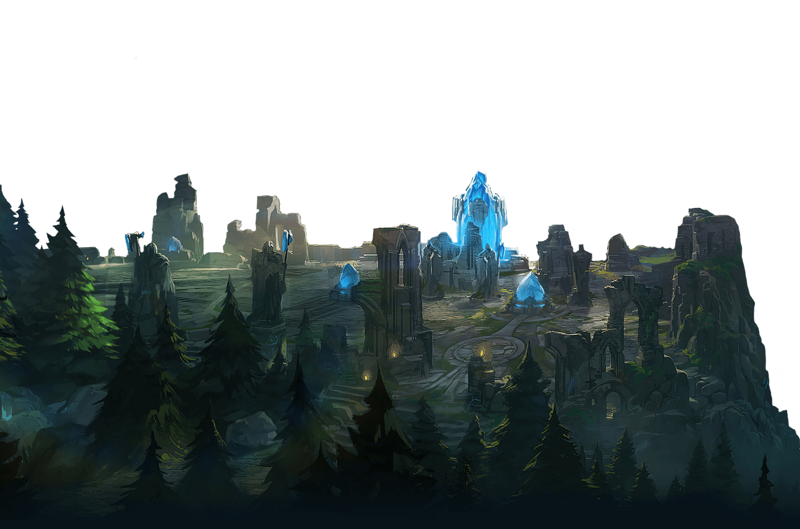
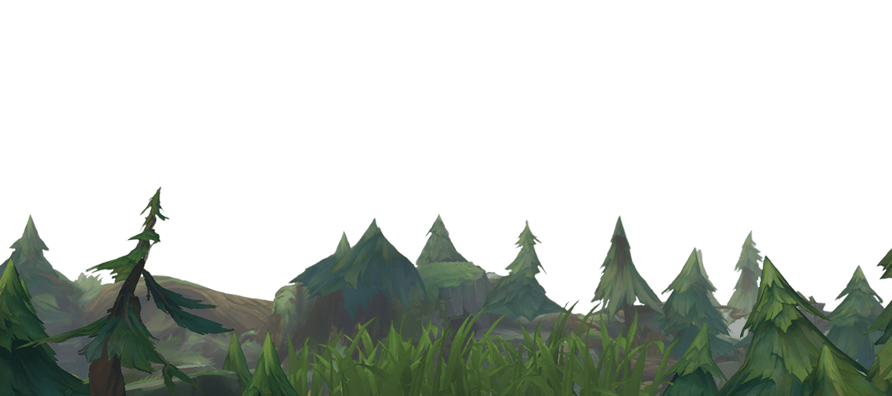
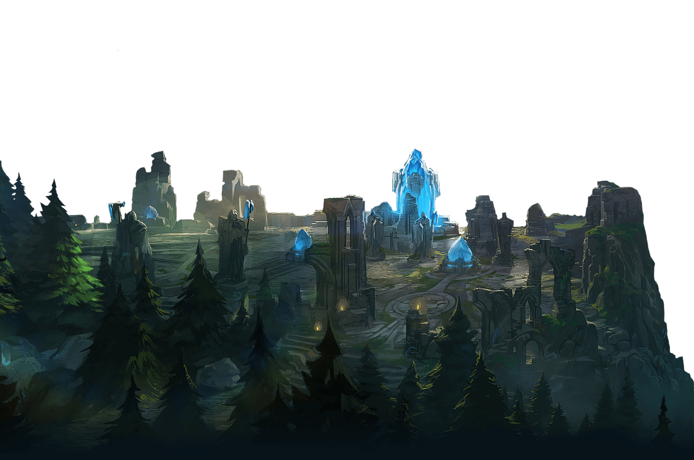
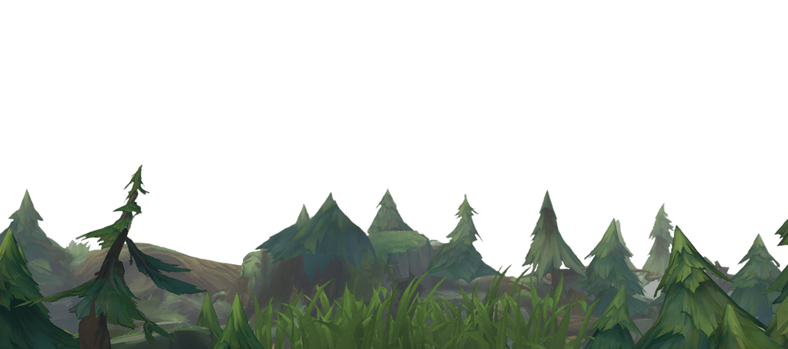
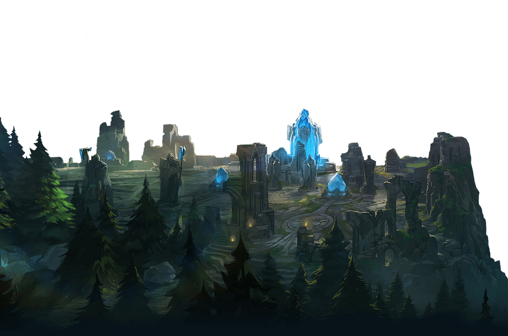
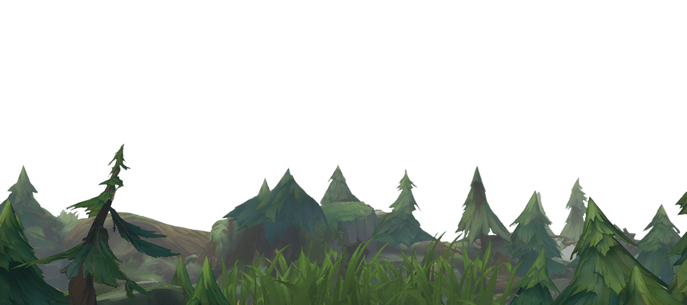

El nexo es el corazón de las bases de los equipos. Para ganar la partida, hay que destruir el nexo enemigo.
Para llegar hasta el nexo enemigo, tu equipo tendrá que avanzar por al menos una calle. Hay estructuras defensivas que bloquean tu avance: las torretas y los inhibidores. Cada calle cuenta con tres torretas y un inhibidor. Además, cada nexo tiene dos torretas adicionales.
Entre las calles se encuentra la jungla, en la que habitan monstruos neutrales y plantas mágicas. Los dos tipos de monstruos más importantes son el Barón Nashor y los dragones. Acabar con estas unidades otorgará a tu equipo mejoras únicas y, en ocasiones, te ayudará a darle la vuelta a la partida.
La composición de equipo más recomendada está integrada por cinco posiciones diferentes. Las características de cada una de las calles favorecen a ciertos tipos de campeones y roles. ¡Pruébalas todas o elige la que más te guste!